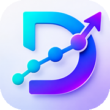

DeltyPeople do not leave tracking apps over a missing feature. They leave over four things: a paywall that appeared after they had already spent twenty minutes setting up; a record that vanished after an update or a new phone; a dose they could not correct or backdate; and reminders that fired on the wrong day, or not at all. Everything below follows from those four.
1. Is the price on the screen before the trial starts? If you cannot find the annual price until after the questionnaire, assume the questionnaire is the sales funnel. A three-day trial on a weekly medication means you decide before your second dose.
2. What can you do without paying, and can that change later? A free tier that covers logging today can be narrowed at your next renewal. Look for a plain statement of what stays free.
3. Where does the record live? On the phone, in the maker’s cloud, or both. On-device with a backup you hold is the only arrangement where the company cannot lose it and cannot read it.
4. Can you correct or backdate an entry? You will log a Sunday dose on Monday. You will tap the wrong site. An app that cannot fix that is keeping a record of its own mistakes.
5. Does it handle your actual units and schedule? Micrograms and IU, an every-three-days item, a five-on-two-off cycle, a blend logged as one tap. Check with the exact things you take before you commit an hour of setup.
6. What happens when you miss a day? A counter that resets to zero, or a guilt-shaped notification, is a reason people uninstall. The evidence on habit formation says one missed day does not matter; an app that punishes it is wrong as well as unkind.
7. Can you hand the record to a clinician? One page with dated changes first, then side effects against those dates, then measurements. If the export is a spreadsheet dump, it will not be read.
8. Does it give dosing advice? It should not, and it should say so plainly. An app that suggests amounts, or an assistant that answers “how much”, is a liability you are carrying for it.
9. Who answers when something breaks? Read the developer replies under the one-star reviews. A named person who fixed the thing within days is worth more than any feature list.
Enter one item exactly as you take it. Log a dose. Undo it. Log it on yesterday instead. Find the price. Find the export. Turn the phone off and on. If any of those was a surprise, it will be a bigger one in month three.
The record and its export stay free, and we say so on the pricing section of this site, where the annual price is printed. Your record lives on your iPhone with archives and daily restore points you hold; nothing is uploaded unless you turn on an optional service listed in the privacy policy. Every entry can be corrected, undone or backdated, and undone doses keep a dated receipt. Units, every-N-days, cycles and blends are all first-class. A missed day is a missed day: nothing resets and nothing scolds. The visit summary is one page. Delty never calculates or suggests a dose, and it does not rate you.
Back to Delty · Records for appointments · What the numbers on a vial mean